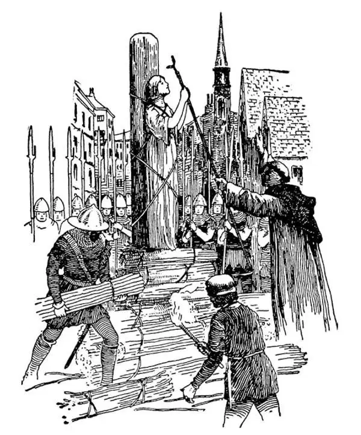

60
Thelon Gest Wart Hate Verwas
历史上时间最长的战争

Is this another Latin heading?
No, it's English.
Don't you understand English?
It was 1338, and Edward III was king of England. He also owned some land in France, which the French king wanted to take away from him. Edward III decided he wanted to rule France as well as England. He said he was related to the former king of France and had a better right to the country than the one who was ruling. So he started a war to take France, and the war he started lasted more than a hundred years. This is known as the Hundred Years' War and it is:
The Longest War that Ever Was!
The English army sailed over from England and landed in France. The first great battle was fought in 1346 at a little place called Crécy. The English army was on foot and was made up chiefly of the common people. The French army were mostly knights clad in armor on horseback.
The French knights on horseback thought themselves much finer than the common English soldiers who were on foot. The English soldiers, however, used a weapon called the longbow, which shot arrows with terrific force, and they completely whipped the French knights in spite of the fact that the knights were nobles, were trained to be fighters, rode on horses, and were protected by armor.
Cannons were used by the English in this battle for the first time. The cannons, however, did not amount to much nor do very much harm. They were so weak that they simply tossed the cannon-balls at the enemy as one might throw a basketball or football. They scared the horses of the French but did little other damage. But this was the beginning of what was before long to be the end of knights and armor and feudalism.
After the battle of Crécy, a horribly contagious disease called bubonic plague attacked the people of Europe. It was like the plague in Athens in the Age of Pericles, but this plague did not attack just one city or country. It was supposed to have started in Cathay, and it spread westward until it reached Europe. There was no running away from it. It spread far and wide over the whole land and killed more human beings than any war that has ever been. The bubonic plague was called Black Death, because black spots came out all over the body of anyone who caught it, and he was certain to die within a few hours or a day or two. There was no hope. No medicine had any effect. Many people committed suicide just as soon as they found they had the disease. Many died just from fright, actually “scared to death.”
It lasted two years, and millions upon millions caught the disease. One third of the people of Europe died of it. Whole towns were wiped out, and in many places no one was left to bury the dead. Dead bodies lay where they had fallen—on the street, in the doorway, in the marketplace.
The crops in the fields went to waste, for there was no one to gather them. Horses and cows roamed over the country at will, for there was no one to care for them. The plague attacked even sailors at sea, and ships were found drifting about on the water with not a soul alive left on board, with not even one left to steer the ship.
What if it had killed every last man, woman, and child in the world! What then would have been the future history of the world?
As if there were not enough people dead already, the Hundred Years' War still went on year after year. The soldiers who had fought at Crécy had been dead for years. Their children had grown up, fought, and died; their grandchildren had grown up, fought, and died; and their great grandchildren had done the same; and the English army was still fighting in France. The French prince at that time was very young and weak, and the French were almost in despair—hopeless— because they had no strong leader to help them drive out the English after all these many years.
Now, in a little French village there was living a poor peasant girl, a shepherdess, called Joan of Arc. As she watched her flocks of sheep, she had wonderful visions. She heard voices calling to her, telling her she was the one who must lead the French armies and save France from England. She went to the prince's nobles and told them her visions. But they did not put any faith in her or her visions, and they did not believe she was able to do the things she thought she could.
To test her, however, they dressed up another man as the prince and put him on the throne while the prince stood at one side with the nobles. Then they let Joan into the room. When Joan entered the royal hall, she gave one look at the man who was seated on the throne and dressed up as the prince. Then without hesitating she walked directly past him and went straight to the real prince. Before him she knelt and said, “I have come to lead your armies to victory.” The prince at once gave her his flag and a suit of armor, and she rode out at the head of all the army and had the prince crowned king.
The French soldiers took heart again. It seemed as if the Lord had sent an angel to lead them, and they fought so hard and so bravely that they won many battles.

Joan of Arc at the stake （火刑柱上的贞德）
The English soldiers, however, thought that it was not the Lord but the devil who had sent Joan and that she was not an angel but a witch, and they were very much afraid of her. At last, the English made her prisoner. The French king, whom she had saved, didn't even try to save her, in spite of all she had done for him. Now that things were going his way, he didn't like to have a woman running things, and the soldiers didn't like to have a woman ordering them around, and they were glad to be rid of her.
The English tried her as a witch, judged her guilty of being a witch, and then they burned her alive at the stake.
But Joan seemed to have brought the French good luck, to have put new life into their armies, for from that time on, France increased in strength, and, after more than a hundred years of fighting, at last drove the English out of the country. In more than one hundred years of fighting, hundreds of thousands of people had been wounded and crippled and blinded and killed, and after it all England was no better off, just the same as when it started—all the fighting all for nothing.
【中文阅读】
这又是一个拉丁文的标题吗？
不是的，这是英语的。
难道你不懂英语？
公元1338年，英国国王是爱德华三世。他在法国也拥有一些土地，法国国王想把这些土地从他手里夺过去。爱德华三世认定自己不仅要统治英国还要统治法国。他自己是法国前国王的亲戚，比现任国王更有资格领导这个国家，所以他发动了一场夺取法国的战争，这场战争持续了一百多年，史称“百年战争”，而且是：
历史上时间最长的战争！
英国军队乘船从英国出发，在法国登陆。第一次大战役是公元1346年，战场在一个叫克雷西的小地方。英国军队都是步兵，主要由普通老百姓组成。法国军队大部分是身着盔甲、骑着骏马的骑士。
骑在马上的法国骑士认为自己比普通的英国步兵强得多，不把他们放在眼里。然而英国士兵使用了一种叫做长弓的武器，这种弓射出的箭威力极大，彻底击败了法国骑士，尽管法国骑士都是贵族，又受过专门的训练，骑着大马，还被盔甲保护得严严实实。
在这次战役中英国人第一次使用大炮。但是这些大炮没有起到多大作用，杀伤力也不强。大炮的冲力很小，只是向敌军抛出炮弹，就像扔了只篮球或足球一样。炮弹只是让法军的马匹受到惊吓，没有造成其他伤害。但这是个序幕，它预示不久以后骑士、盔甲和封建主义的结束。
克雷西战役之后，欧洲爆发了一场可怕的叫做“腺鼠疫”的传染病。它像伯里克利时代雅典的瘟疫一样，不过这场瘟疫不仅仅侵害一个城市，或一个国家。据说它起源于中国，向西一直蔓延到欧洲。所经之处无人幸免。在整个大陆广泛传播，死于这场瘟疫的人比在以往任何一场战争中死去的人都多。腺鼠疫当时叫做“黑死病”，因为任何人感染了这种病，全身会出现很多黑点，而且在几小时或一两天之内必死无疑。没有任何希望。任何药物都没有效果。许多人刚发现自己染上病，就自杀了。许多人只是受不了惊恐而死，是真正“吓死的”。
这场瘟疫持续了两年，千百万人感染上这种病。有三分之一的欧洲人因此而死去。经常是整个城镇的人都死光了，许多地方连埋死尸的人都没剩下。到处是倒地而亡的尸体——街上、门口旁、市场里。
田里的庄稼都荒芜了，因为没有人收割。马和牛没人照看，在乡间四处乱窜。就连航海的水手也感染了黑死病，船在水上漂来漂去，船上连一个活人也没有，哪有人来驾船呢？
要是世界上每一个男人、女人和孩子都死于这场瘟疫，那会有什么结果呢？之后世界的历史会怎样呢？
好像因黑死病而死去的人还不够多似的，英法百年战争还在一年又一年地继续。曾参加过克雷西战役的士兵们已经死去多年了。他们的孩子长大后，开始作战，然后死去；他们的孙子长大成人，继续打仗，再死去；他们的曾孙也重复这个过程；英国军队仍然在法国作战。那时候，法国王子既年幼又懦弱，法国人几乎绝望了——法国濒于绝境——因为英国人入侵这么多年以后，他们没有强悍的领袖帮助他们驱逐英国人。
那时，在法国一个小村庄里，生活着一个贫穷的农家女孩，她是一个牧羊女，叫贞德。她在牧羊时，看到了奇妙的幻象。她听到有声音在召唤她，还说只有她才能率领法国军队，将法国从英军手下拯救出来。她找到王子身边的贵族，把她看到的幻象告诉他们。但是他们根本不相信她和她看到的幻象，也不相信她有这样的能力可以拯救法国。
不过，为了试试，他们把另一个人装扮成王子，让他坐在王位上，而王子和贵族们站在一边。然后他们让贞德进屋。当贞德走进皇家大厅，她看了一眼那个坐在王位上、装扮成王子的人。接着，她毫不迟疑地从他身边走过，直接走到真正的王子面前。她向王子下跪，对王子说：“我是来带领你的军队走向胜利的。”王子立刻将自己的旗令和一副盔甲给了她，自己加冕为国王。贞德一马当先领军杀敌。
法国士兵重新振作起来。似乎就像上帝派了一位天使领导他们，他们浴血奋战、英勇万分，接连打了很多胜仗。
但是英国士兵却认为不是上帝而是魔鬼派来了贞德，她不是天使而是女巫，他们非常惧怕她。最后，英国人把她俘虏了。法国国王此时根本没打算救她，尽管她挽救过他，还为他立下汗马功劳。既然形势正按照自己的意愿好转，他可不想让一个女人来管事，士兵们也不愿意让一个女人指挥他们团团转，他们都很高兴能摆脱她。
英国人把她作为女巫审判，并以此判她有罪，然后，把她活活烧死在火刑柱上。
但是贞德似乎给法国带来了好运，让军队获得了新生，从那时起，法国军力大增，经过一百多年的奋战，终于把英国人从自己的国土上赶走了。在一百多年的战争中，成千上万的人受伤、致残，成了瞎子乃至死亡，经过这么长时间的战争，英国的情况丝毫没有变好，还和战争开始时一样——百年来的拼战厮杀全都白费了。